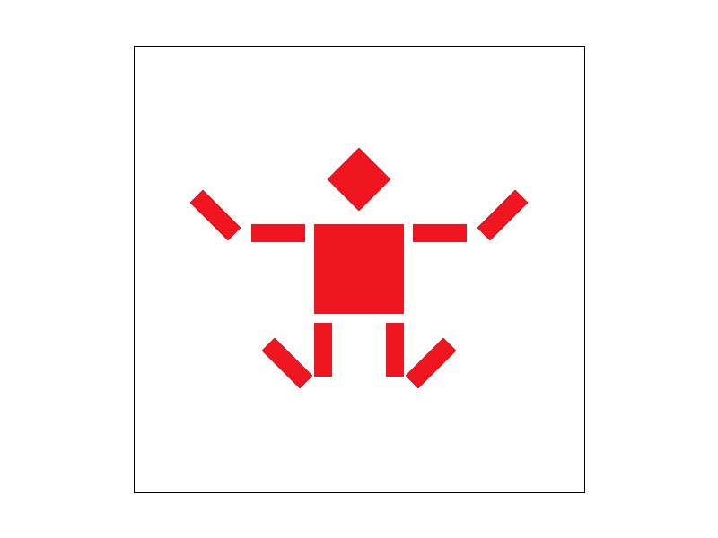
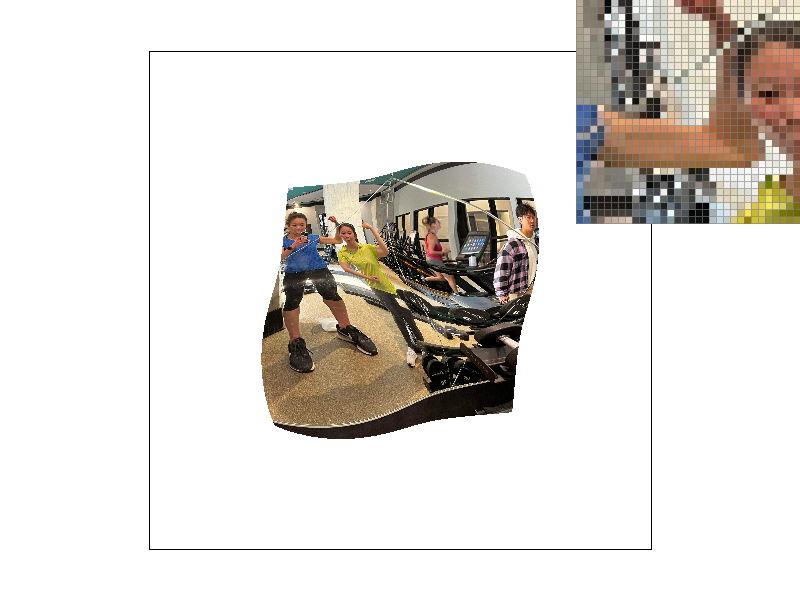

Overview
Give a high-level overview of what you implemented in this project. Think about what you've built as a whole. Share your thoughts on what interesting things you've learned from completing the project.
Section I: Rasterization
Part 1: Rasterizing single-color triangles
Triangles are rasterized using the three line check. We iterate through every pixel within the bounding box of the triangle (we don't check every pixel in the framebuffer; therefore this algorithm is no worse than one that checks each sample within the bounding box of the triangle). For each pixel, we calculate the sign of the cross product of the vector from the pixel to one of the corners of the triangle, and the vector of one of the sides of the triangle the corner is attached to. We repeat this for all three sides. If the sign of the cross product for all three sides is the same, then we know the pixel is inside the triangle, and we can rasterize the pixel. Otherwise, we don't.
Part 2: Antialiasing triangles
For supersampling, we create a sample_buffer that is of size (width * sqrt(sample_rate)) x (height * sqrt(sample_rate)). In other words, if the original image is 100x100, and we sample at a sample_rate of 4, then the sample_buffer would be of size 200x200. The buffer is stored as a 1D vector of Color values. For each pixel, we sample sample_rate times at uniformly distributed locations in each pixel, and store it into the sample buffer. Lines and pixels are also modified to store sample_rate items of the same color into the sample_buffer, as to scale lines and points up properly. Every time we sample at a different rate, we clear both the frame buffer and the sample buffer. Then, when we resolve the sample buffer to the frame buffer, we average down the sqrt(sample_rate) x sqrt(sample_rate) grid of sample values that are related to each output pixel. The average values, stored in a Color object, are then converted to 8-bit values for each of the RGB components and stored in the frame buffer.
|
|
|
|
|
|
Part 3: Transforms
The transformations are augmented matrices that accommodates all transformations (rotations, translations, reflections) into matrix multiplication.
Section II: Sampling
Part 4: Barycentric coordinates
Barycentric coordinates are a way to interpolate between points. In the image above, notice how each of the vertices of the triangle are a different color; red, green, and blue, respectively. The colors inside the triangle blend together. At each point within the triangle, the color of the pixel is a weighted average of the colors in the three vertices. The closer the distance of the pixel is to each vertex, the higher the weighting of the color of the vertex. Mathematically, the color is alpha * C1 + beta * C2 + gamma * C3, where C1, C2, and C3 are the colors in each of the three vertices, and alpha, beta, and gamma are the normalized distances to vertex 1, 2, and 3 from the pixel, respectively (normalized so that alpha + beta + gamma = 1).

Part 5: "Pixel sampling" for texture mapping
Pixel sampling is a method to sample the pixel value at any given point in an image or texture, given pixel values of points near the point we want to calculate. Nearest neighbour sampling simply copies the pixel value of the closest known point. Bilinear sampling takes the four closest pixels to the point we want to calculate, and linearly interpolates the point to find the corresponding pixel value. The closer the point is to one of the four pixels, the more similar the value of that point will be to the value of that pixel. We implemented both sampling methods for texture mapping by first mapping the screen coordinates to the texture coordinates. Then, we find the closest known pixel value(s) to the texture coordinate we want to calculate. Nearest neighbour sampling copies the pixel value of the closest known point on the texture. Bilinear sampling calculates the linear interpolation value of the four closest pixels in the texture.
|
|
|
|
|
|
The difference between sampling at a rate of 1 versus 16 is that the images with a higher sample rate have smoother edges, with nearest pixels blurred together. Even at sample rate 1, bilinear sampling produces a smoother output. This is because each (u, v) point is calculated using a Barycentric average of the closest pixels, as opposed to just copying the pixel value of the nearest pixel, which would produce more extreme and higher variance outputs. When the image has high frequency, there will be a larger difference between the two methods. Nearest neighbour sampling will take the value closes to the point, but because of the high frequency, the actual point value may not be the same as the value of the closest neighbour. Bilinear sampling will average the value over the four closest pixels, which may blur the high frequency, but result in a smoother, lower variance output.
Part 6: "Level sampling" with mipmaps for texture mapping
Level sampling is when you sample from mipmaps, a pre-calculated sequence of images, each of which is a higher/lower resolution representation of the texture. We implemented it for texture mapping by sampling from different levels in the mipmap. When we use L_ZERO sampling, we simply sample from the zero-th level mipmap. When we use L_NEAREST sampling, we round the distance to the nearest mipmap level, and sample from that level using nearest or bilinear sampling functions. When we use L_LINEAR, we compute the distance between the two nearest mipmap levels, and compute the weighted sum using one sample from each of the adjacent levels, weighted by the distance to each of the two levels, using the LERP function.
Mipmaps and level sampling only require slightly more memory to store the multiple levels of texture maps, but they offer significant antialiasting power and computational speedups, because we don't need to recompute the texel value but can directly sample from the mipmap instead. Pixel sampling is a method to sample the correct texel in a texture mapping. Nearest neighbour pixel sampling is more computationally efficient as it takes only one sampler per pixel, but it can create more antialiasing, since if the texture starts out with high frequency, then moving coordinates by even less than one pixel ot the nearest pixel could land us at a very incoherent texel value. Bilinear sampling takes the weighted average by distance of the four closest texels by location; this helps blend the high frequencies together to create a more coherent screen image but will result in more computational power. Increasing the number of samples per pixel helps with antialiasing by increasing the sample frequency. However, it also incurs computational costs, having to take sample_rate more times samples than before, and store it into a temporary memory, which needs to be sample_rate size bigger as well. Thus, all three techniques have tradeoffs between speed, memory usage, and antialiasing power.

|

|
|
|
|
Section III: Art Competition
If you are not participating in the optional art competition, don't worry about this section!